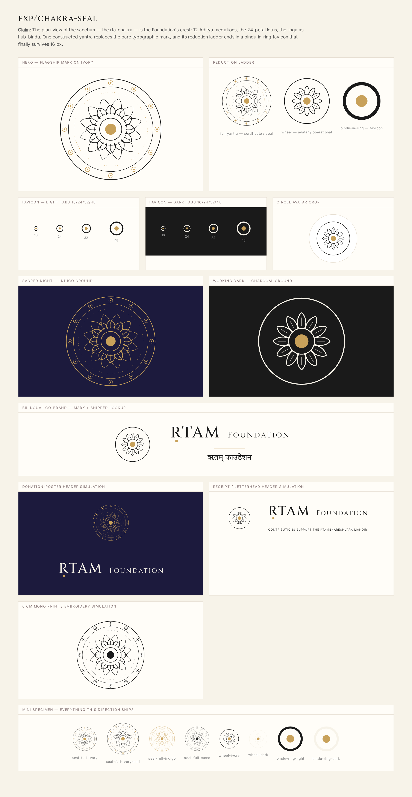
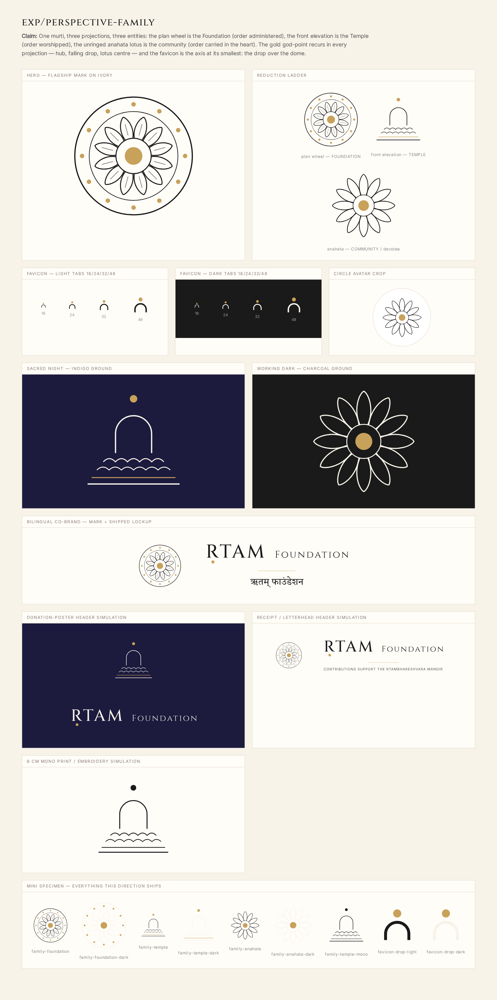
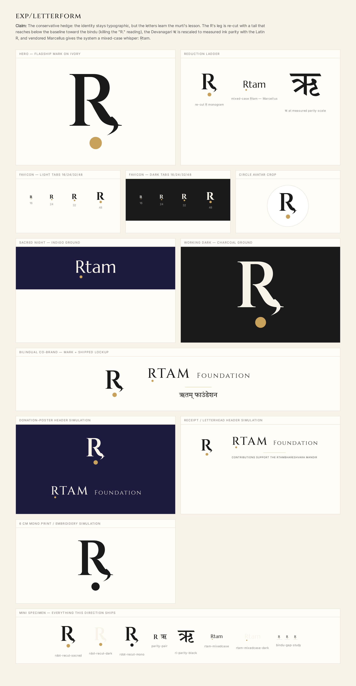
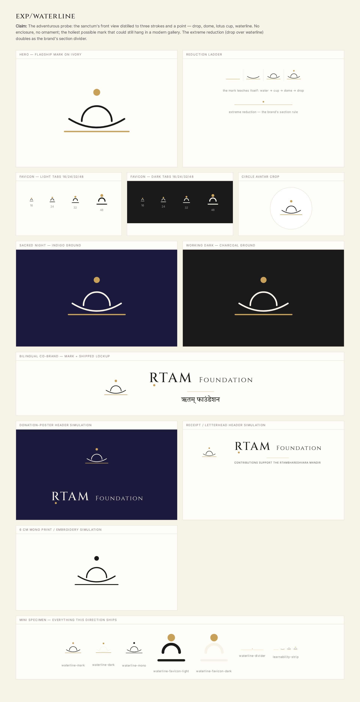

Every direction rendered the SAME stations through the fixed Phase-0 pipeline:
hero · reduction ladder · favicon 16–48 (light+dark) · indigo + charcoal grounds · circle avatar ·
bilingual co-brand · poster header sim · receipt header sim · 6 cm mono sim · mini specimen.
Full per-direction rationale in each branch's hypothesis.md / eyecheck.md
(git branches exp/chakra-seal, exp/perspective-family,
exp/letterform, exp/waterline).
| station | A · chakra-seal | B · perspective-family | C · letterform | D · waterline |
|---|---|---|---|---|
| Favicon at 16 px | PASS — bindu-in-ring (circled god-point) | PASS — drop-over-dome (tiny shrine) | LIMIT — typographic R mushes (inherited) | PASS — dot·arc·line stack |
| Sacred night (indigo) | PASS — gold-line yantra; strongest ceremonial render | PASS — elevation w/ gold waterline; most ownable | PASS — mixed-case Ṛtam whispers | PASS — modern-temple register |
| Receipt / operational | PASS — wheel rung per sanctity ladder | PASS — foundation wheel | PASS — quiet monogram | PASS |
| 6 cm mono / embroidery | PASS — medallions hold as dots | PASS — elevation holds | PASS — tail survives | PASS |
| Circle avatar | PASS — wheel | PASS — anāhata (heart register) | PASS — monogram | PASS− — wide in a circle |
| Named risks | medallions vanish <48px (ladder answers); wheel rung must stay engraved | three marks need governance; anāhata floral-generic alone | tail can read as comma; favicon unsolved | sunrise/spa misreading; least "12-ness" |
| Carries the numbers (12/24/30°) | fully | fully (plan + anāhata) | no — typographic only | no — axis only |
| Distinct vs generic-chakra / generic-minimal | nālī index + Āditya band + engraving | projection system itself is the differentiator | proprietary letter | strong but nearest to wellness-minimal |



